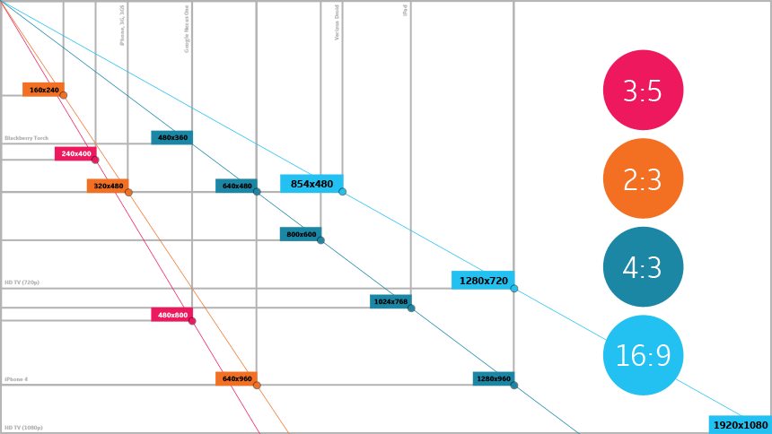

Webbasierte Anwendung Teil 1
Responsive Design Workshop
19. November 2015
Studiengang Medieninformatik an der technischen Hochschule Köln
Campus Gummersbach
Nico Ferdinand und Clara Meschkat
Was ist Responsive Design?
Einheitliche Darstellung von Informationen
Unterschiedliche Displaygrößen
Flexibles Layout
"form follows function"
Wie wird Responsive Design umgesetzt?
HTML5
CSS3 Media Queries
(jQuery)
Standard Auflösungen von Smartphones und Tablets
Smartphones: 320px bis 480px
Tablet: 768px bis 1024px
Desktop: 1024px +

Wie teste ich ob eine Webseite "Responsive" ist?
Developer Tools
Bildschirmgrößen testen

Pro's
Geräte übergreifende Flexibilität
Kostengünstiger
Allgemein Angepasst
Leute müssen keine Ahnung haben
Con's
Verbraucht gleiches Datenvolumen
Daher teurer für den Nutzer
Mobile Ansichten sind komprimierter
Wie wird die Zukuft für Responsive Design aussehen?
Responsive Design wird sich durchsetzen
Einfach umsetzbar
Benutzerorientiert
Ansprechend
Komponenten für Responsive Design in CSS
Relative Angaben
Selten absolute Angaben
Media Queries
Relative Angaben
Allgemeine Anpassung
"rem" / "em"
Prozentangaben
Absolute Angaben
Möglichst selten
Angaben mit "px"
z.B. Fenstergröße
Media Queries
Media Queries
Syntax: @media screen
Fenstergrößen
Selektoren oder HTML-Tags
z.B. Schriftgröße ändern
Aufgabe 1
Kontaktseite bearbeiten
Aufgaben im Master-Branch
Unter "responsive_design_training"
Im Ordner Style auf "style_uebung1.css"
Im Ordner img ist ein Screenshot der gelösten Seite
Cheat-Sheets am Ende angehangen
Aufgabe 2
Speisekarte bearbeiten
Unter "responsive_design_training"
Im Ordner Style auf "style_uebung2.css"
Zusatzaufgabe
Home-Seite, Kontaktseite und Speisekarte anpassen
Unten links auf jeder Seite soll Logo "viel drin" angehangen werden
Das Bild soll "relativ" groß sein bei der Desktop Seite
Je Nach größe des mobilen Devices "klein" oder "ausgeblendet"
Bild ist im Ordner img und heißt "vieldrin.jpg"
Cheat-Sheets:
Codeply Responsive DesignMac-Blog Media Queries